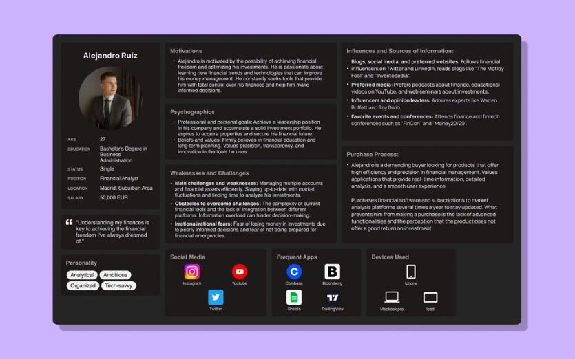
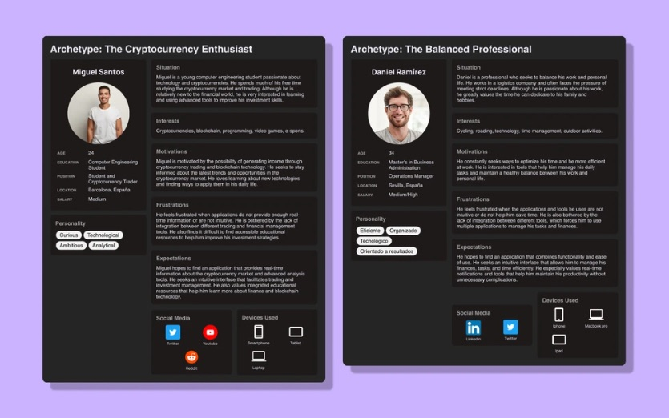
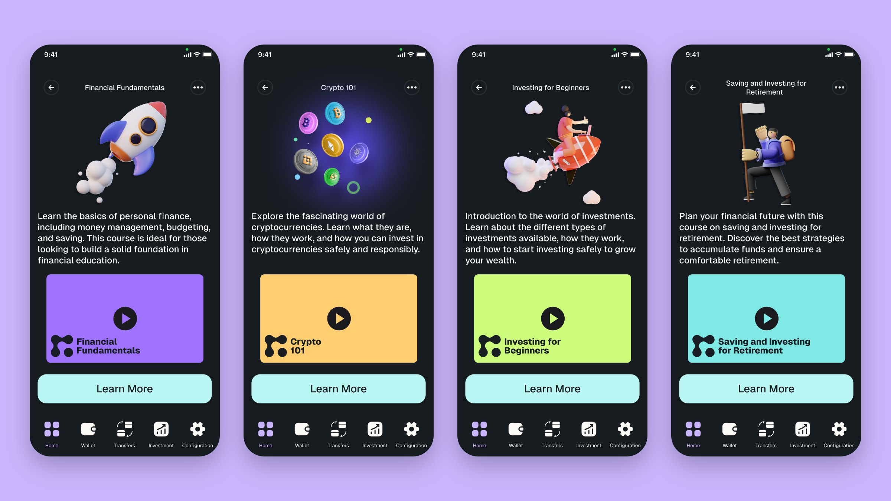
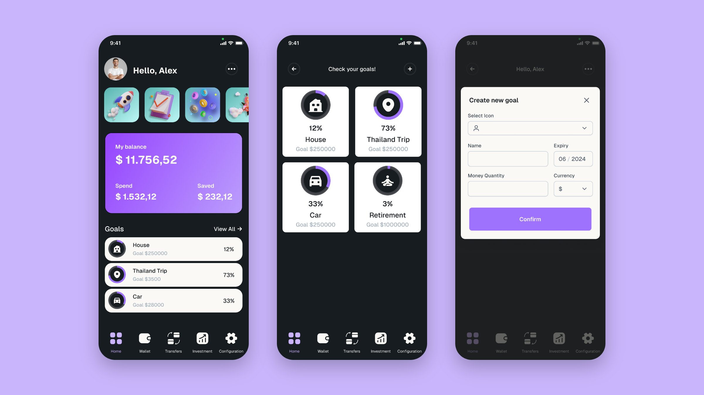
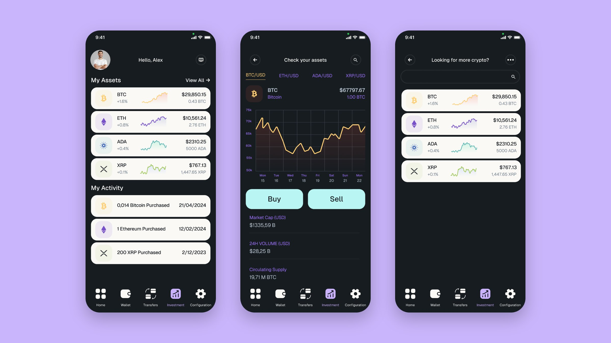
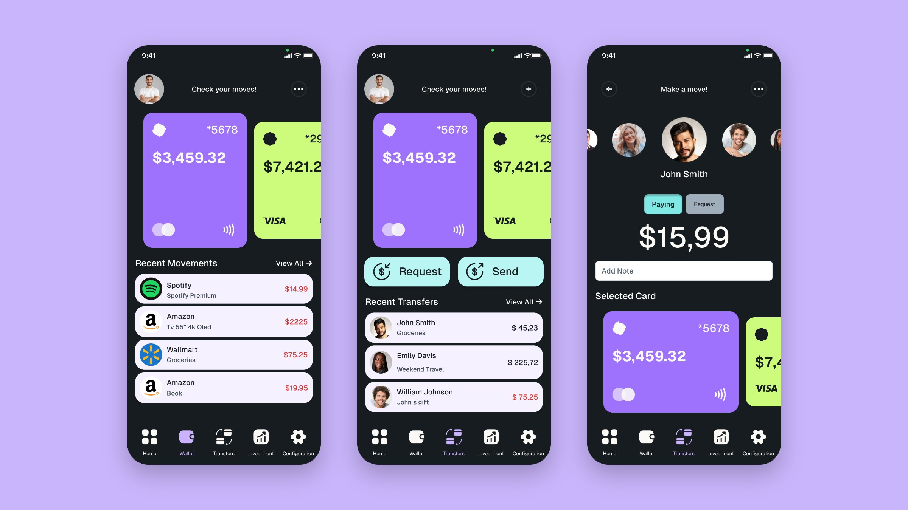
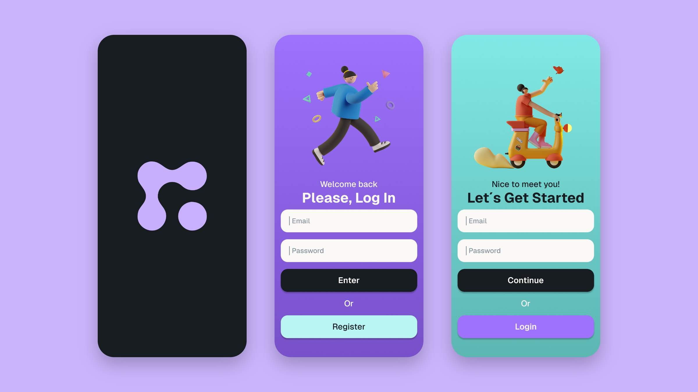

Forte
A finance app that teaches you before it lets you invest.Una app de finanzas que te enseña antes de dejarte invertir.

The problemEl problema
Everyone tells you to invest. Almost nobody explains the risks, or how to start.
Todo el mundo te dice que inviertas. Casi nadie te explica los riesgos, ni cómo empezar.
We are surrounded by messages about investing, crypto and passive income, but very few people understand what they are getting into. I chose this topic for my final bootcamp project because I kept seeing the same gap: people want to do something with their money and don’t know where to begin.
Vivimos rodeados de mensajes sobre invertir, criptomonedas e ingresos pasivos, pero muy poca gente entiende en qué se mete. Elegí este tema para mi proyecto final del bootcamp porque veía siempre la misma carencia: la gente quiere hacer algo con su dinero y no sabe por dónde empezar.
Concept project · designed end to end on my ownProyecto conceptual · diseñado de principio a fin en solitario
Research
Two findings shaped the whole product:
Dos hallazgos marcaron todo el producto:
- People don’t understand the risksLa gente no entiende los riesgos
They had heard of investing, crypto or compound interest, but couldn’t explain what could go wrong.
Habían oído hablar de inversión, criptomonedas o interés compuesto, pero no sabían explicar qué podía salir mal.
- They don’t trust finance appsNo se fían de las apps financieras
Flashy apps that push you to buy felt more like a casino than a tool.
Las apps llamativas que te empujan a comprar les parecían más un casino que una herramienta.


Learn firstPrimero, aprender
If people don’t understand the risks, the app should teach before it sells.
Si la gente no entiende los riesgos, la app debe enseñar antes de vender.
Learning is organised in knowledge levels by topic: financial fundamentals, budgeting, crypto, investing for beginners, debt and retirement. Each one has short videos, so you can progress at your own pace before putting real money in.
El aprendizaje se organiza en niveles de conocimiento por tema: fundamentos financieros, presupuestos, criptomonedas, inversión para principiantes, deudas y jubilación. Cada uno tiene vídeos cortos, para avanzar a tu ritmo antes de poner dinero real.

Goals you can pictureObjetivos que puedes imaginar
Saving works better with a reason. You create goals like a car or a house deposit, and the app shows your progress as a percentage, not as a spreadsheet. It is the gamified side of Forte: small, visible wins that keep you going.
Ahorrar funciona mejor con un motivo. Creas objetivos como un coche o la entrada de una casa, y la app muestra tu progreso en porcentaje, no como una hoja de cálculo. Es la parte gamificada de Forte: pequeños logros visibles que te animan a seguir.

Designed for trustDiseñada para dar confianza
Because people didn’t trust finance apps, I avoided anything that felt like a game of chance: a sober, professional dark interface, clear numbers, and buy and sell actions that are visible but never pushy. Investing sits next to everyday money, so it feels like part of managing your finances, not a separate bet.
Como la gente no se fiaba de las apps financieras, evité todo lo que pareciera un juego de azar: una interfaz oscura, sobria y profesional, cifras claras y acciones de compra y venta visibles pero nunca insistentes. La inversión convive con el dinero del día a día, para que se sienta parte de gestionar tus finanzas y no una apuesta aparte.


BrandMarca
I also designed Forte’s identity: a logo built from connected shapes, a palette of lilac, aqua, lime and amber on dark, and a short logo animation for the app launch.
También diseñé la identidad de Forte: un logo construido con formas conectadas, una paleta de lila, aguamarina, lima y ámbar sobre fondo oscuro, y una pequeña animación del logo para el arranque de la app.

Looking backMirando atrás
Forte taught me to start from a real problem and let research drive every decision. If I designed it today, I would build a design system from day one, as I now do professionally, and polish every detail much further.
Forte me enseñó a partir de un problema real y a dejar que la investigación guíe cada decisión. Si lo diseñara hoy, crearía un design system desde el primer día, como hago ahora en mi trabajo, y puliría mucho más cada detalle.